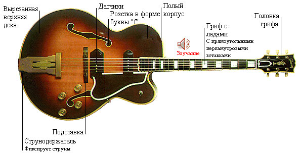

Semiconductor Guitar
Information

Some of Semiconductor Guitar's
Information
Напівакустична гітара - струнний щипковий музичний інструмент (в більшості різновидів з шістьма струнами) з сімейства гітар, звучання якого здійснюється завдяки коливанню струн, що підсилюється за рахунок резонансного полого корпусу. Сучасні акустичні гітари можуть мати вбудовані звукосниматели: магнітні або п'єзоелектричні, з еквалайзером і регулятором гучності.
Акустична гітара є основним інструментом таких жанрів, як авторська пісня, фолк, займає важливе місце в циганської і кубинської народної музики, рок, блюз та інших жанрах.
Назва «Акустична» може трактуватися двояко: з одного боку, воно означає спосіб звукопідсилення резонуючим корпусом інструменту, без використання електрики; з іншого - окремий клас гітар з металевими струнами і корпусами типу Дредноут, Фолк і Джамбо.
20-ті роки минулого століття були в США справжнім століттям джазу, точніше - епохою великих джазових оркестрових складів. Заради збагачення звучання оркестрів новими аранжувальної фарбами в них - точніше, в їх ритм-секції - в ті роки почали вводити гітари. І, хоча до часів повного електричного посилення звуку ще треба було дожити, головний недолік гітари в оркестровому контексті був очевидний: занадто тихий звук в порівнянні з іншими інструментами оркестру. Саме це підштовхнуло тодішніх музикантів шукати шляхи електричного посилення звукового сигналу гітари - причому не мікрофоном, в який зрозумілим чином «пролізали» і інші інструменти оркестру, а електромагнітним звукоснимателем. Такий звукознімач в ті роки був саморобну конструкцію на основі стандартного на той час U-образного постійного магніту, і така собі громіздка система зазвичай встановлювалася на одну з найпопулярніших серед професіоналів гітару Gibson L-5. Навіть перша серійна електрогітара, точніше - знаменита «сковорідка», стіл-гітара Rickenbacker ElectroA-22 1931, мала подібний звукознімач з двома магнітами. І тільки в 1936 році компанія Gibson представила на ринку першу справжню напівакустичну гітару, розраховану в першу чергу на роботу з підсилювачем - ES-150. «ES» в позначенні вказувало на іспанська тип гітари (природно, з корпусом повної глибини), а «150» - на чималу в ті роки вартість комплекту з гітари, підсилювача і чохла в $ 150. На інструменті був встановлений звукознімач системи Чарлі Крісчен ( «Charlie Christian pickup») з вібруючим сердечником, жорстко скріпленим з верхньою декою гітари. Однак висока вартість і відома дивовижних ES-150 перешкодила її широкому розповсюдженню - за п'ять років було продано всього 1 412 гітар. По суті, справжня історія електроакустичних гітар, розрахованих на широкі кола музикантів, стартувала в 1949 році - з виходом на ринок моделі Gibson ES-175 і була продовжена в середині 50-х тим же брендом випуском серії Thinline (ES-350T і ES-225T ). А в 1958-му Gibson представили модель ES-335, остаточно сформувала конструкцію і образ сучасної напівакустичної гітари. Нині гітари цього класу - обов'язкова частина каталогу будь-якого серйозного бренду, але не можна забувати, що основи їх конструкції так чи інакше закладені вищезазначеними інструментами Gibson.